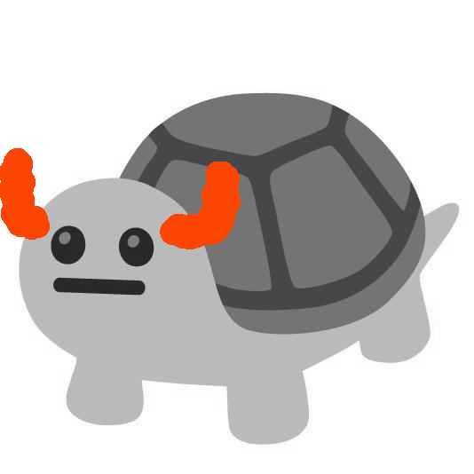
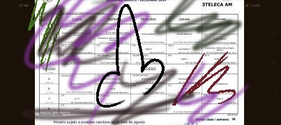

arachnidsRizz [AR] began trolling totallyMousetricious [TM]
AR: (8)y ath(8)
AR: Mañana a q hora (8)ntras ::::)
TM: H0lii papu
TM: A las
TM: 7:50
TM: [:)
TM: Kakakakakaka
TM: Y tu?
AR: Hola mamu :::v
AR: 1gual
AR: Sal(8)s?
AR: Yo a las 2:00
AR: 
TM: Pk tan tarde [:(
TM: Y0 a las
TM: 1:10
TM: 💥
AR: Cual (8)s tu pr1m(8)ra cla(8)? ::::)
TM: Kre0 k iingles [:(
TM: Y la tuya?
TM: Per0 ashhh
TM: Al khiile sii m gust0 mii h0rarii0
AR: (8)l m1o (8)s una m1(8)rda
AR: ::::P
AR: m toca (8)cos XXXXD
AR: 
TM: Pued0 leerl0 superr biien eh
TM: kual es ese papu
TM: Ek0l0giia
TM: [:?
AR: Kakakakka
AR: P(8)st(8)rlog de m1(8)rda
AR: L(8) (8)aja la cal1dad a todo
AR: As1 v(8)o yo con m1op1a